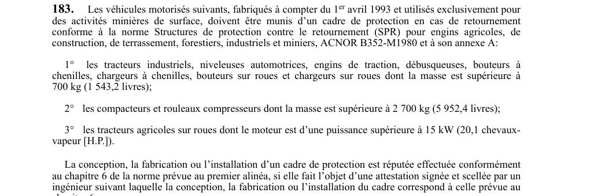

art-183-RSSM : cadre protection retournement engins surface
Les engins récents affectés aux activités minières de surface doivent porter un cadre de protection contre le retournement (SPR) conforme à ACNOR B352-M1980 et à son annexe A. Cette obligation vise l'employeur.
- Double condition d'assujettissement : véhicule fabriqué à compter du 1er avril 1993 et utilisé exclusivement pour des activités minières de surface.
- 1° Tracteurs industriels, niveleuses automotrices, engins de traction, débusqueuses, bouteurs et chargeurs, à chenilles ou sur roues, de masse supérieure à 700 kg (1 543,2 livres).
- 2° Compacteurs et rouleaux compresseurs de masse supérieure à 2 700 kg (5 952,4 livres).
- 3° Tracteurs agricoles sur roues dont le moteur dépasse 15 kW (20,1 chevaux-vapeur).
- La conformité au chapitre 6 de la norme est réputée acquise sur attestation signée et scellée par un ingénieur.
🌐 LegisQuébec · 📄 PDF officiel
Texte officiel
Les véhicules motorisés suivants, fabriqués à compter du 1 avril 1993 et utilisés exclusivement pour des activités minières de surface, doivent être munis d’un cadre de protection en cas de retournement conforme à la norme Structures de protection contre le retournement (SPR) pour engins agricoles, de construction, de terrassement, forestiers, industriels et miniers, ACNOR B352-M1980 et à son annexe A:
1° les tracteurs industriels, niveleuses automotrices, engins de traction, débusqueuses, bouteurs à chenilles, chargeurs à chenilles, bouteurs sur roues et chargeurs sur roues dont la masse est supérieure à 700 kg (1 543,2 livres);
2° les compacteurs et rouleaux compresseurs dont la masse est supérieure à 2 700 kg (5 952,4 livres);
3° les tracteurs agricoles sur roues dont le moteur est d’une puissance supérieure à 15 kW (20,1 chevaux- vapeur [H.P.]).
La conception, la fabrication ou l’installation d’un cadre de protection est réputée effectuée conformément au chapitre 6 de la norme prévue au premier alinéa, si elle fait l’objet d’une attestation signée et scellée par un ingénieur suivant laquelle la conception, la fabrication ou l’installation du cadre correspond à celle prévue au chapitre 6.
Pour les véhicules motorisés, visés au premier alinéa et fabriqués avant le 1 avril 1993, l’article 278 du Règlement sur la santé et la sécurité du travail (chapitre S-2.1, r. 13) s’applique.
Texte de l’article 183 RSSM, extrait de la couche texte du PDF officiel (page 58), sans OCR ni retouche. La capture ci-dessous et le PDF font foi.
{kind=link}

Toucher l'image pour l'agrandir🔗 Voir art. 183 RSSM dans le PDF (page 58)
Version : texte officiel du RSSM (RLRQ c. S-2.1, r. 14), à jour au 1er mai 2024 — Éditeur officiel du Québec
Voir aussi
- art. 181 : freins service stationnement véhicules motorisés · obligation : un véhicule motorisé dirigé par rail doit être muni de freins de service capables d'arrêter et de maintenir le véhicule à l'arrêt, indépendamment du frein dynamique.
- art. 182 : immobilisation roues véhicule lourd pente · obligation : les roues d'un véhicule motorisé dont la charge utile est supérieure à 2 300 kg doivent être immobilisées par des cales ou d'autres moyens empêchant tout mouvement sur une voie en pente lorsque le conducteur le quitte ou lors de l'entretien du véhicule.
- art. 184 : cadre protection retournement camions halage · obligation : les camions de halage utilisés en surface, fabriqués à compter du 1er avril 1993 et dont la masse est supérieure à 17 000 kg, doivent être munis d'un cadre de protection contre le retournement conforme à la norme SAE J1040-APR88.
- art. 185 : cadre protection contre chutes d'objets · obligation : pour toute mine souterraine et tout nouveau développement, les véhicules motorisés fabriqués à compter du 1er avril 1993 doivent être protégés contre les chutes d'objets par un cadre SPCO conforme à la norme ISO 3449:1992, avec attestation d'ingénieur si applicable.
- ⚖️ Loi habilitante : LSST
- ↑ Index du bloc : Sautage et explosifs
Pages qui pointent ici (6)
- art-181-RSSM : freins de service véhicule sur rail Recueil législatif
- art-182-RSSM : immobilisation roues véhicule lourd pente Recueil législatif
- art-184-RSSM : cadre protection retournement camions halage Recueil législatif
- art-185-RSSM : cadre protection contre chutes d'objets Recueil législatif
- art-188-RSSM : modifications structure cadre protection normes Recueil législatif
- RSSM : Sautage et explosifs (art. 161 à 200) Recueil législatif